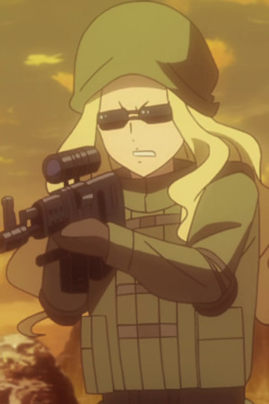
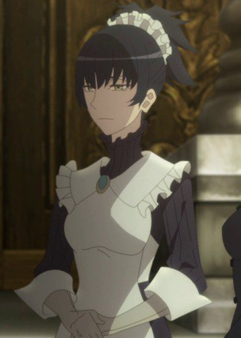
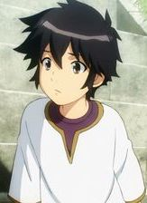
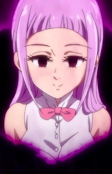
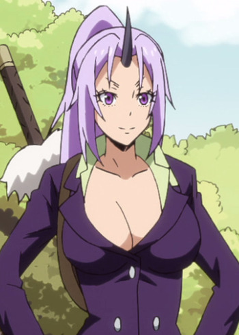

|  |
Anna |
- Sword Art Online Alternative: Gun Gale Online
|
Anna is a player in Gun Gale Online. Her real name is Moe Annaka. She and her friends are part of their school gymnastic team. |
|  |
Claire |
- Lord El-Melloi II Case Files: Rail Zeppelin Grace Note
|
Claire is the maid for the Fargo family. She is in charge of the family mansion. |
|  |
Ikta Solork |
|
Ikta Solork is a lazy genius. He lacks physical strength and motivation but makes up with his high intelligence. He is aggressive towards handsome men. He is childhood friends with Yatorishino Igsem. MAO voiced the younger Ikta Solork. |
 |
Mamushi Hojo |
- Blue Exorcist: Kyoto Saga
- Blue Exorcist OVA
|
Mamushi Hojo is the eldest daughter of Uwabami Hojo and sister of Nishiki and Ao. She is an Imtermediate First Class Exorcist at the Kyoto Branch of the True Cross Order. She is a clamed and serious exorcist who has a strong sense of self-justice. She is loyal to Mtoo Dharani. |
|  |
Melascula |
- The Seven Deadly Sins: Revival of The Commandments
- The Seven Deadly Sins: Wrath of the Gods
|
Melascula is a member of the demon clan. She serves the Demon King as the Commandment of Faith. She has a calm, reserved, and yet mocking personality. |
|  |
Shion |
- That Time I Got Reincarnated as a Slime
|
Shion is Rimuru Tempest's personal secretary. She is the leader of the Yamigaeri and one of Rimuru strongest fighters. She is very clumsy and kind of dense. She does everything with all strength. Shion became increasingly vicious towards her enemies. |


.jpg)